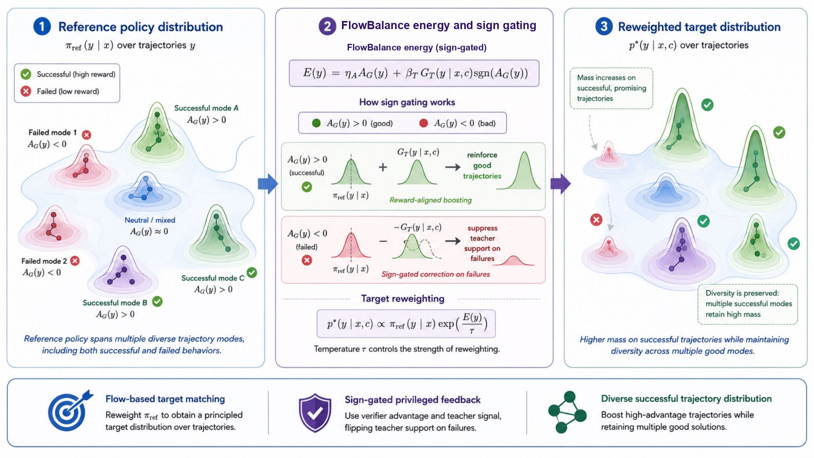
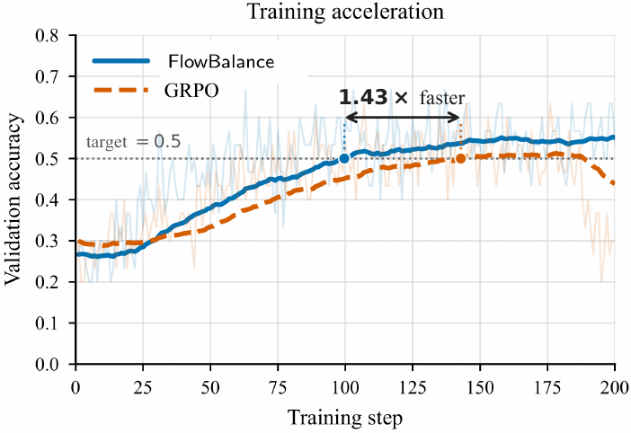
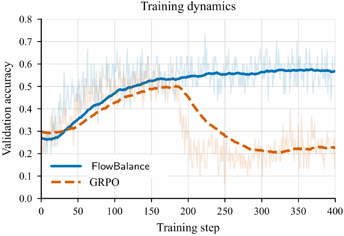
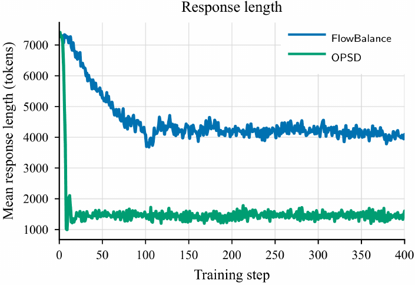
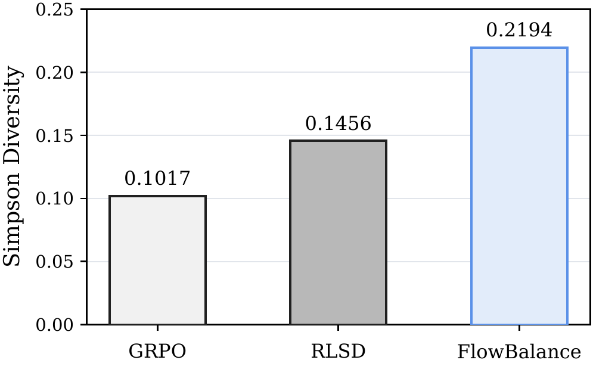

A verifier supplies reliable correctness, but one terminal reward cannot identify which reasoning decisions made a long trajectory useful or misleading.
FlowBalance · Tencent HY LLM Frontier · August 2026
FlowBalance: Dense-Supervision-Motivated Trajectory Balance
Dense reasoning feedback, calibrated by verified outcomes.
FlowBalance starts from FlowRL's distributional view of reasoning and adds dense privileged supervision without introducing a separate imitation loss. Verifier advantages determine the outcome direction; a frozen self-teacher refines each sampled trajectory; and profiled trajectory balance learns the resulting reference-supported distribution over complete responses.
Part 01
Motivation
Given a problem $x$, a reasoning policy generates a complete response $y=(y_1,\ldots,y_T)\sim\pi_\theta(\cdot\mid x)$. A verifier returns an outcome $r(x,y)$—for example, whether the final answer is correct. The successful set
$$\mathcal Y^+(x)=\{y:r(x,y)=1\}$$
usually contains more than one trajectory. Two responses can reach the same correct answer through different representations, intermediate arguments, or solution strategies. Therefore, improving a reasoning model is not only about increasing $\Pr_{y\sim\pi_\theta}[r(x,y)=1]$; it is also about deciding how probability should be allocated within $\mathcal Y^+(x)$.
A solution-conditioned self-teacher can confidently support a plausible failure, suppress exploration, or collapse responses toward shorter traces.
Combine outcome advantage and token-level teacher evidence into one trajectory energy, then normalize it into a distribution over complete responses.

Why sparse RL and local distillation are not enough
Outcome-only RL provides direction but little information along a trajectory. Local distillation provides dense information but does not guarantee agreement with verified correctness. Adding the two as separate losses still leaves their conflict unresolved: it does not specify the normalized complete-response distribution that the policy should learn.
FlowBalance resolves the conflict at the target-design level. The verifier determines whether teacher support should reinforce or suppress a trajectory. The resulting composite energy tilts a fixed reference policy, while a shared partition value converts relative preferences into a normalized distribution for each rollout group.
Part 02
Methodology
FlowBalance starts from FlowRL and changes its response energy. For each on-policy rollout group, the verifier produces a stopped group-relative advantage $A_i$. A frozen copy of the rollout model then receives privileged context—such as a reference solution—and rescores every sampled token. The clipped average log-probability gain over the reference becomes the trajectory-level signal $G_T(y_i)$.
Generate a group of complete responses without privileged context.
Use the verifier for outcomes and the privileged teacher for dense trajectory scores.
Convert both signals into one normalized target over the sampled answers.
The resulting energy does not update the policy by itself. It first defines how much relative mass each complete response should receive:
The target distribution
$$p_i^\star=
\frac{\pi_{\mathrm{ref}}(y_i\mid x)\exp(E_i/\tau)}
{\sum_j\pi_{\mathrm{ref}}(y_j\mid x)\exp(E_j/\tau)},
\qquad
E_i=\eta_AA_i+\beta_TG_T(y_i)\operatorname{sign}(A_i).$$
$\pi_{\mathrm{ref}}$
Preserves support from the initial model instead of imitating the teacher without constraint.
$A_i$
Separates responses using verifier-derived, group-relative correctness.
$G_T(y_i)$
Summarizes dense privileged feedback over the complete sampled trajectory.
$Z_{\mathcal G}$
Turns relative preferences into a probability distribution for the prompt.
Distributional propertyFlowBalance is the smallest reference shift that reaches its energy level.+
Let $p_i^\star\propto\pi_{\mathrm{ref}}(y_i)e^{E_i/\tau}$ on the realized rollout group. For every group distribution $p$,
$$\mathrm{KL}(p\|\pi_{\mathrm{ref}})=\mathrm{KL}(p^\star\|\pi_{\mathrm{ref}})+\mathrm{KL}(p\|p^\star)+\frac{\mathbb E_p[E]-\mathbb E_{p^\star}[E]}{\tau}.$$Among distributions attaining at least the target's expected energy, $p^\star$ uniquely minimizes reverse KL to the reference.
Part 03
Trajectory Balance
FlowBalance has already defined the desired distribution over complete responses. Trajectory balance turns that distribution into a trainable condition: if the student matches the target, then every sampled response $y_i$ must satisfy
Target condition
$$\pi_\theta(y_i\mid x)
=\frac{1}{Z_{\mathcal G}(x,c)}
\pi_{\mathrm{ref}}(y_i\mid x)
\exp\!\left(\frac{E_i}{\tau}\right).$$
Taking logs and moving all terms to one side gives the trajectory-balance residual:
Trajectory-balance residual
$$\Delta_i
=\tau\log Z_{\mathcal G}
+\tau\log\frac{\pi_\theta(y_i\mid x)}{\pi_{\mathrm{ref}}(y_i\mid x)}
-E_i.$$
FlowBalance minimizes the squared residual across the rollout group:
FlowBalance objective
$$\mathcal L_{\mathrm{FlowBalance}}
=\frac{1}{2N}\sum_{i=1}^{N}\Delta_i^2.$$
Complete-response supervision
The gradient flows through the sum of student token log-probabilities, but the balance condition is imposed on the probability of the full response.
One partition per rollout group
All responses to the same prompt share $Z_{\mathcal G}$. It converts trajectory energies into a normalized distribution rather than independent scores.
Profile the unknown normalizer
Each response implies a value of $\log Z$; FlowBalance uses their group mean and stops gradients through this estimate.
Group partition estimate
$$\widehat{\log Z}_{\mathcal G}
=\frac{1}{N}\sum_{i=1}^{N}
\left[
\frac{E_i}{\tau}
-\log\frac{\pi_\theta(y_i\mid x)}{\pi_{\mathrm{ref}}(y_i\mid x)}
\right].$$
Contrast preservationProfiling one scalar $Z$ preserves every pairwise response preference.−
At zero profiled trajectory-balance loss, for every $i,j$ with positive reference support,
$$\frac{\pi_\theta(y_i\mid x)}{\pi_\theta(y_j\mid x)} =\frac{\pi_{\mathrm{ref}}(y_i\mid x)}{\pi_{\mathrm{ref}}(y_j\mid x)} \exp\!\left(\frac{E_i-E_j}{\tau}\right).$$The shared partition cancels in the ratio. It removes one common group offset while preserving all $N-1$ relative-probability directions.
Part 04
When should FlowBalance trust the privileged teacher?
Privileged likelihood and verifier correctness are different signals. A teacher may assign positive gain to a coherent-looking response that the verifier rejects. FlowBalance therefore uses the sign of $A_i$ as a gate: teacher gain raises the energy of positive-advantage responses, lowers the energy of negative-advantage responses, and vanishes when $A_i=0$.
Verified
Follow teacher support.
sign gate
Rejected
Reverse teacher pressure.
Move the weights and watch the distribution respond
This toy rollout group contains two verified answers and two rejected answers. Each starts with reference probability $\pi_{\mathrm{ref}}(y_i)$ and receives the FlowBalance energy
$$p_i^\star\propto\pi_{\mathrm{ref}}(y_i)
\exp\!\left(\eta_AA_i+\beta_TG_T(y_i)\operatorname{sign}(A_i)\right),$$
Verifier weight $\eta_A$moves mass from rejected answers toward verified answers.
Teacher weight $\beta_T$changes relative preference using privileged reasoning feedback.
Sign-gating guaranteeTeacher support on a rejected response becomes a correction favoring the verified response.+
Consider a verified response $y_+$ and a verifier-rejected response $y_-$ in the same mixed-outcome rollout group. Compared with otherwise identical ungated teacher shaping, sign gating changes their target probability ratio by
$$\frac{p^\star_{\mathrm{gated}}(y_+)}{p^\star_{\mathrm{gated}}(y_-)} =\frac{p^\star_{\mathrm{ungated}}(y_+)}{p^\star_{\mathrm{ungated}}(y_-)} \exp\!\left(\frac{2\beta_TG_T(y_-\mid x,c)}{\tau}\right).$$Thus, when the privileged teacher assigns positive gain to a rejected response, the gate converts that support from imitation pressure into a success-to-failure probability-ratio gain.
Part 05
Experiments
Across five mathematical reasoning benchmarks, FlowBalance achieves the strongest average on both Qwen3-4B and Qwen3-8B. It improves over outcome-only FlowRL by 1.04 and 1.76 points, respectively, while also training faster and more stably than GRPO and avoiding direct OPSD's response-length collapse.



Best five-benchmark average; +1.04 over FlowRL.
Best on every reported benchmark; +1.76 over FlowRL.
About 100 steps to 0.5 validation accuracy versus 143 for GRPO.
| Model | Method | AIME24@16 | HMMT25@1 | Minerva@1 | MATH500@1 | Olympiad@1 | Avg. |
|---|---|---|---|---|---|---|---|
| Qwen3-4B | GRPO | 78.00 | 26.67 | 51.18 | 92.04 | 63.68 | 62.31 |
| OPSD | 65.33 | 14.67 | 47.28 | 87.56 | 55.76 | 54.12 | |
| RLSD | 73.33 | 21.33 | 50.29 | 91.44 | 61.36 | 59.55 | |
| FlowRL | 75.33 | 30.67 | 51.99 | 92.84 | 65.25 | 63.22 | |
| FlowBalance | 80.00 | 32.00 | 50.51 | 93.28 | 65.49 | 64.26 | |
| Qwen3-8B | GRPO | 85.33 | 31.33 | 52.87 | 93.16 | 64.78 | 65.49 |
| OPSD | 48.67 | 4.00 | 38.46 | 74.56 | 40.09 | 41.16 | |
| RLSD | 82.67 | 28.00 | 52.94 | 93.44 | 63.56 | 64.12 | |
| FlowRL | 86.67 | 30.67 | 52.79 | 92.92 | 66.20 | 65.85 | |
| FlowBalance | 89.33 | 34.67 | 53.68 | 93.52 | 66.85 | 67.61 |
Part 06
Diversity Analysis
We use GPT-5.5 to extract the core mathematical representation and tools from each full AIME24 trajectory, then cluster anonymized summaries by semantic strategy rather than wording or response length. Correctness is revealed only after clustering, and diversity is computed on correct trajectories using
Simpson Diversity
$$D_{\mathrm{Simpson}}=1-\sum_{k=1}^{K}p_k^2,$$
where $p_k$ is the fraction of correct trajectories in cluster $k$; equivalently, $D_{\mathrm{Simpson}}$ is the probability that two sampled correct trajectories use different strategies.

Case study: the same answer through a different mathematical object
AIME24 Problem 23. A tetrahedron has opposite edge pairs $\sqrt{41}$, $\sqrt{80}$, and $\sqrt{89}$; compute its inradius expression.
Cayley–Menger determinant
Treat the tetrahedron through its six pairwise distances, build the distance matrix, exploit symmetry, and recover the volume from a distance invariant.
distance geometrydeterminantsymmetry
versus
Hidden rectangular-box embedding
Recognize $41=4^2+5^2$, $80=4^2+8^2$, and $89=5^2+8^2$; embed the vertices in a $4\times5\times8$ box and compute volume with a scalar triple product.
coordinate embeddingPythagorean structuretriple product
Both trajectories are correct; the distinct determinant and box-embedding routes illustrate FlowBalance's greater diversity among successful strategies.